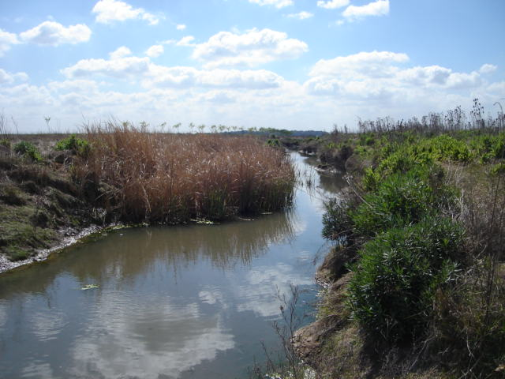

Arroyo Pampeano

Características
Arroyos de planicie
Velocidades de corriente bajas
Sedimentos limo-arcillosos
Sin vegetación de ribera
Índices apropiados
Índice de Diatomeas Pampeano
Índice de Macroinvertebrados Pampeano
Índice Biótico Pampeano